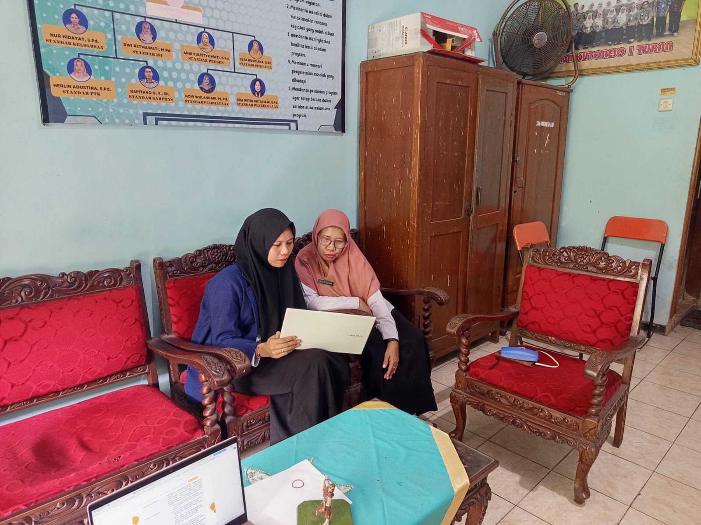

Dokumentasi penilaian pembelajaran selama kegiatan Program Pendidikan Profesi Guru (PPG).

Dokumentasi penilaian dari Guru Pamong terhadap pelaksanaan pembelajaran yang dilakukan selama kegiatan Praktik Pengalaman Lapangan (PPL).
Penilaian meliputi kompetensi pedagogik, profesional, pengelolaan kelas, penggunaan media pembelajaran, serta kemampuan komunikasi dalam proses pembelajaran.
Dokumentasi penilaian dari Dosen Pembimbing Lapangan (DPL) terhadap proses pembelajaran dan perangkat ajar yang digunakan selama Program PPG Prajabatan.
Penilaian dilakukan untuk memberikan masukan, evaluasi, dan pengembangan kompetensi calon guru profesional.